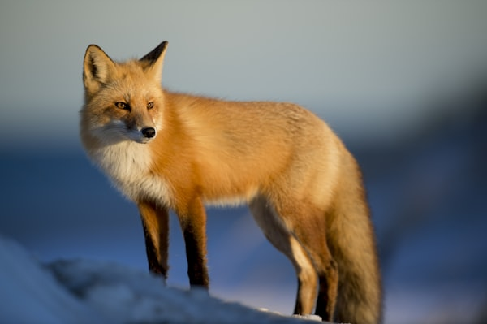

Red Fox
Red foxes can hear rodents digging underground and then leap high to land right on top of their prey.
- Scientific Name: Vulpes vulpes
- Average Length: 18-35 inches (body only)
- Diet: Omnivore
- Habitat: Forests, grasslands, mountains, and suburbs
The red fox is one of the most widespread wild canids in the world. It adapts quickly to different environments and is known for its intelligence, agility, and distinctive bushy tail.